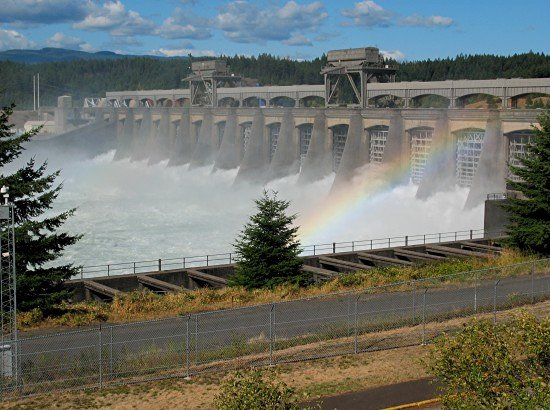

The Columbia Basin Research Center collects data on the number of fish that pass through the Columbia River from British Columbia through Oregon. Data is collected at each dam along the river, including the Bonneville dam in Oregon through the Data Access in Real Time (DART) program.
Bonneville Dam
(Anonymous Traveler Photo)

The following project will analyze the passage of steelhead trout through the Bonneville Dam from 1939 - 2019. Analysis will look at different patterns of passage daily, seasonally, and annually through the dam. The data is from Columbia Basin Research.
Code Steps
Load packages
library(tidyverse)
library(janitor)
library(feasts)
library(tsibble)
library(lubridate)
Read in data
steelhead_raw <- read_csv("cbr_fish_passage_bonneville_allyrs_steelhead.csv") %>%
clean_names()
Tidy the data
steelhead <- steelhead_raw %>%
drop_na(value) %>% #remove NA values
filter(value>=0) %>% #remove negative values
separate(mm_dd, into=c("day", "month")) %>% #separate month from day
mutate(yr_mo_day = paste(year, match(month,month.abb), day, sep="-"),
yr_mo = paste(year, match(month,month.abb), sep="-"),
date = as.Date(yr_mo_day)) %>%
filter(!is.na(date)) %>% #remove leap year date(s)
mutate(year_month = tsibble::yearmonth(yr_mo_day)) %>%
select("year", "year_month", "yr_mo", "date", "value") # select relevant columns
Daily Data
steelhead_day <- ggplot(data=steelhead, aes(x=date, y=value)) +
geom_line() +
xlab("Date") +
ylab("Number of fish") +
theme_minimal()
steelhead_day

Figure 1. Amount of Steelhead Trout per day passing through Bonneville Dam (1939 - 2019).
There seems to be an aspect of seasonality to the number of Steelhead Trout passing through the dam. This could relate to species-specific migration habits.
By looking at the first 3000 observations, we can see this seasonality more clearly…
steelhead_trimmed <- tail(steelhead, n=3000)
ggplot(data=steelhead_trimmed, aes(x=date, y=value)) +
geom_line()

Monthly Data
steelhead_month <- ggplot(data=steelhead, aes(x=year_month, y=value)) +
geom_line()
steelhead_month

Yearly Data
steelhead_year <- ggplot(data=steelhead, aes(x=year, y=value)) +
geom_line()
steelhead_year

Plot Steelhead Passage by Season
#Make a tsibble
steelhead_ts <- as_tsibble(steelhead, index= year_month)
duplicates(steelhead, index=year_month)
## # A tibble: 0 x 5
## # … with 5 variables: year <dbl>, year_month <mth>, yr_mo <chr>, date <date>,
## # value <dbl>
#plot tsibble plots
steelhead_ts %>% autoplot(value)

steelhead_ts %>% gg_subseries(value) +
geom_line(aes(color=year)) +
xlab("Date") +
ylab("Number of fish") +
theme_minimal()

The months of July, August, and September seem to be the peak time for Steelhead Trout passage through the Bonneville Dam.
steelhead_summary <- steelhead %>%
group_by(yr_mo) %>%
summarise(sums=sum(value)) %>%
mutate(year_month = tsibble::yearmonth(yr_mo),
month = month(year_month, label = TRUE),
year = year(year_month),
sums=replace_na(sums, 0)) #replace all NA values w/ 0
# make a tsibble
steelhead_summary_ts <- as_tsibble(steelhead_summary, index= year_month) %>%
fill_gaps()
#ggplot of seasons
ggplot(data=steelhead_summary, aes(x=month, y=sums, group=year)) +
geom_line(aes(color=year)) +
scale_colour_gradientn(colours = c("red","yellow","blue")) +
scale_y_continuous(labels = function(x) format(x, scientific = FALSE)) +
xlab("Month") +
ylab("Number of fish") +
theme_minimal()

Figure 2. Amount of Steelhead Trout per season passing through Bonneville Dam (1939 - 2019).
Plot Steelhead Trout Passage by Year
steelhead_annual <- steelhead_summary %>%
group_by(year) %>%
summarize(sumsofsums=sum(sums))
#ggplot of annual passage data
ggplot(data=steelhead_annual, aes(x=year, y=sumsofsums)) +
geom_line() +
scale_y_continuous(labels = function(x) format(x, scientific = FALSE)) +
xlab("Date") +
ylab("Number of fish") +
theme_bw()

Figure 3. Amount of Steelhead Trout per year passing through Bonneville Dam (1939 - 2019).
Steelhead Trout passage through the Bonneville Dam was increasing from approximately 1980 to 2010, however there seems to be a steady decrease in the past decade.